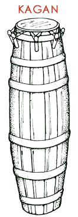

Let's listen to some examples to try to make this discussion a bit more concrete. We will start by listening to some music from the Republic of Benin.

We will start off by talking about a dance called Adzogbo. Adzogbo belongs to the Fon people, who live in the coastal region with rich vegetation and cooling sea breezes. On this recording you will hear four musical instruments in an ensemble playing Adzogbo, of which we will track only three of the instruments in this discussion. In addition to the musicians, those who are dancing Adzogbo are also wearing bells and rattles that create their own rhythmic patters as the dancers move.
| The Gankogui is a wrought iron double bell that is played with a stick. The lower bell can be struck and then dampened against the thigh of a seated performer. | |
The Kagan is a slim, higher pitched barrel-shaped drum. It is usually painted in a striped pattern of red, blue, and green (or sometime just green and white).
|
 |
The head of a Kagan is made of the hide of a small bush antelope.

The head on the Kagan is struck with a stick, sometimes so that the stick bounces up giving a resonant and stressed beat, or sometimes a stick is sharply pressed into the head giving a muted sound that is higher in pitch.
| The Kidi belongs to the same drum family as the Kagan, but it is slightly larger and lower in pitch. | |
There is also a gourd rattle on this recording, called an Axatse, that has its shakers knitted into a web of netting that strikes the outside of the rattle, rather than being placed in the inside of the gourd. We will not worry about how the Axatse functions in Adzogbo for the moment.
|
 |
All of these musical instruments are thought to be part of a family. The Gankogui, the bell, is like the heart beat which keeps things steady. The Kagan is the baby brother and the Kidi is the mother. There are other drums that function as an older brother, twin brothers, and father that are not heard on this recording of Adzogbo.
Listen to the three instruments discussed above (and ignoring the Axatse or gourd rattle in this example). We will be listening for the various rhythmic patterns played by each instrument and the meter that animates the pattern. The answers appear below, but the important thing is for you to try and figure it out—not just to see the answer.
What is the rhythmic pattern that you hear played by the Gankogui (bell)?
Try out each pattern above as you listen to the bell on the recording. Listen to the Adzogbo (Kadodo section).
Listen to the excerpt as many times as needed.
KAGAN PATTERN: short-short-silence short-short-silence silence
Click for the rhythmic pattern played by the Gankogui (bell). If you did not get the correct answer, listen to the excerpt again and try to hear the correct rhythmic pattern.
Once you can easily hear the rhythmic pattern of the Gankogui (bell), count the number of beats to determine the meter. In what meter is the rhythmic pattern of the Gankogui (bell)? Listen to the Adzogbo (Kadodo section).
Again, listen to the excerpt as many times as needed.
Click for the meter of the Gankogui's (bell) rhythmic pattern. If you did not get the correct answer, listen to the excerpt again and try to hear the correct meter of the bell's rhythmic pattern.
The Kagan's part is more difficult to hear because the instrument's timbre is so similar to the Kidi that it may be hard for you to untangle the two different drum lines. The Kagan is in triple meter of three beats (unlike the four-beat duple meter of the bell) and plays a pattern of
BEATS: 1 2 3
KAGAN PATTERN: short-short-silence short-short-silence silence
Click here if you can read musical notation to see a transcription of the Gankogui and Kagan parts.
Listen to the Adzogbo (Kadodo section) for the Kagan part.
Listen to the excerpt as many times as needed.
The Kidi part is still more difficult to hear independently than even
the Kagan
part. The Kidi plays in compound duple meter (two main beats, each
subdivided
into groups of threes) in a pattern of three open strokes and three
closed
strokes. The open strokes have the stick bounce on the drum head
giving a
full resonant sound, while the closed strokes are played by pointing
the
stick's end into the drum head (rather than letting the edge of it
rebound off the head). The result is a muffled-sounding stroke. The
Kidi
plays a pattern of
MAIN BEATS: 1 2
SUBDIVIDED BEATS: 1-2-3 4-5-6
KIDI PATTERN: (open:) ba-ba-ba (closed:) pup-pup-pup
Listen to the Adzogbo (Kadodo section) for the Kidi part.
Listen to the excerpt as many times as needed.
One important observation to take from this discussion is that, while the rhythm played by each instrument is relatively simple, in combination they create an extreme complex fabric of sound.
Further, there is no unified or single beat ONE into which everyone cues. For example, the three different meters have beat ONE in common only every twenty-four beats. To begin to understand how complex the metrical structure is in this example, count out the meters below and emphasize beat ONE very loudly. If you have any friends around, have them count another line. It can be very confusing hearing the ONES pop at different times.
| BELL: | 1 | 2 | 3 | 4 | 1 | 2 | 3 | 4... |
| KAGAN: | 1 | 2 | 3 | 1 | 2 | 3 | 1 | 2... |
| KIDI: | 1 | 2 |
1 | 2 |
1 | 2... |
||
| 1 - 2 - 3 -4 - 5 - 6 . . . | ||||||||
Listen to the Adzogbo (Kadodo section) for the various meters.
Listen to the excerpt as many times as needed.
Now, the only problem is that the three parts do not start all together (as written above) on beat ONE. The entrances are staggered. One ethnomusicologist has characterized this as 'apart-playing.'
They actually begin this way (click here for a transcription if you can read musical notation)
When musicians are first learning to play Adzogbo, they concentrate and focus exclusively on their own part. As they become more accomplished, they then begin to listen to their part within the evolving nexus of meters and rhythms that move around and connect to their part. The musician must be able to manage and be engaged with a very different rhythm (and/or meter) than the one that they play themselves. The result is that the 'beat' (in a Western sense of a single pulse) is not carried by the ensemble, but it is provided by others. The beat is provided by the aggregate of all instruments and rhythms and is actually generated through these rhythmic relationships. A performer or a listener must be truly engaged in listening to the music, because the beat is supplied outside of the ensemble.
To sum up this discussion of Adzogbo, we find that
West Africa contains many rich and varied musical traditions. We have barely begun to scratch the surface even with our discussion of Adzogbo. However, we have covered a number of ideas and concepts that West African musicians employ to create music. The differences between traditional West African music making and even late nineteenth or early twentieth-century jazz are great. Yet there are resonances that are retained between the two traditions. We will follow up on these issues as we encounter examples throughout the balance of the course. We will also return again to this discussion as late twentieth-century jazz musicians turn to West Africa and its musical traditions to enrich jazz.